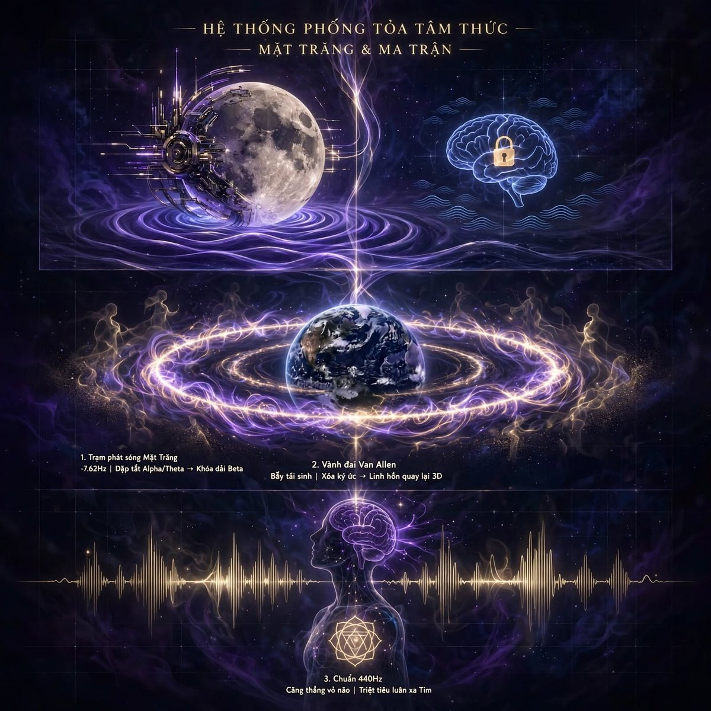
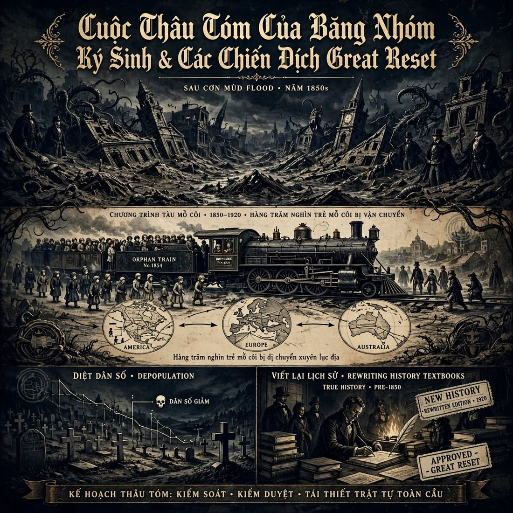
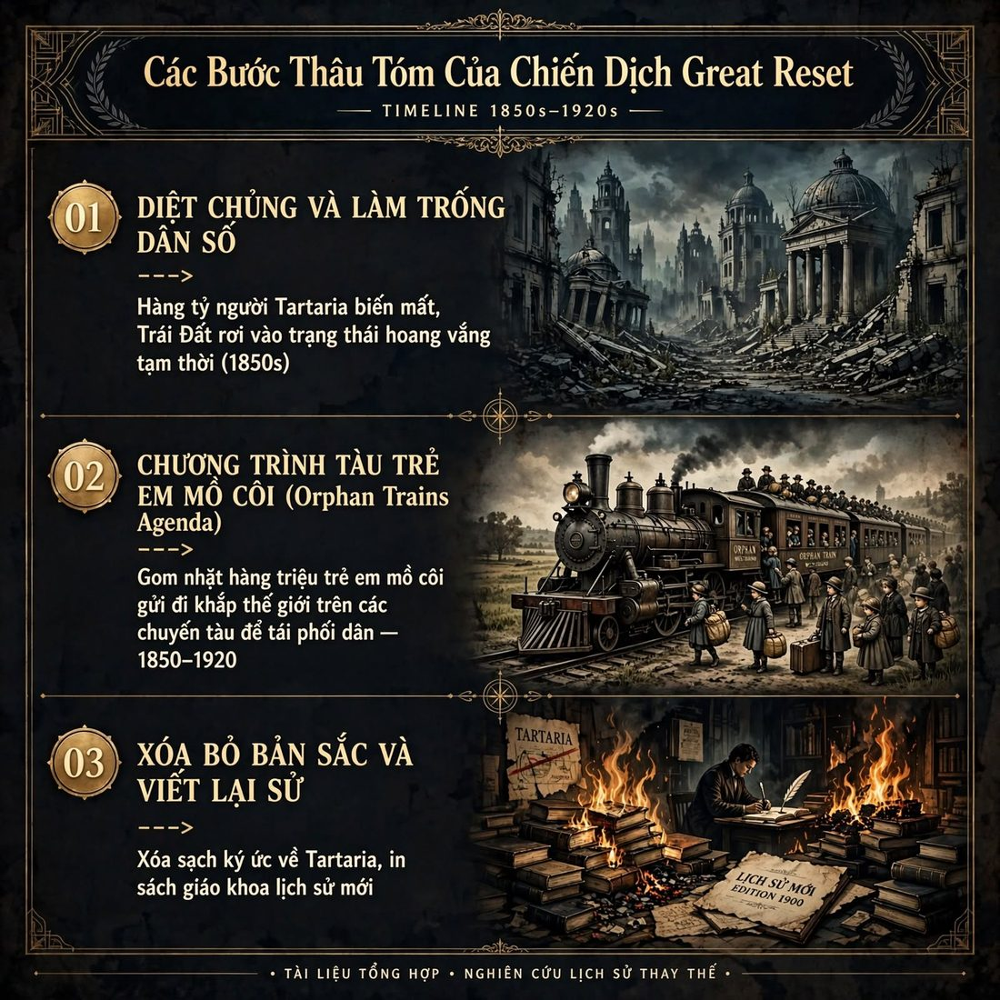
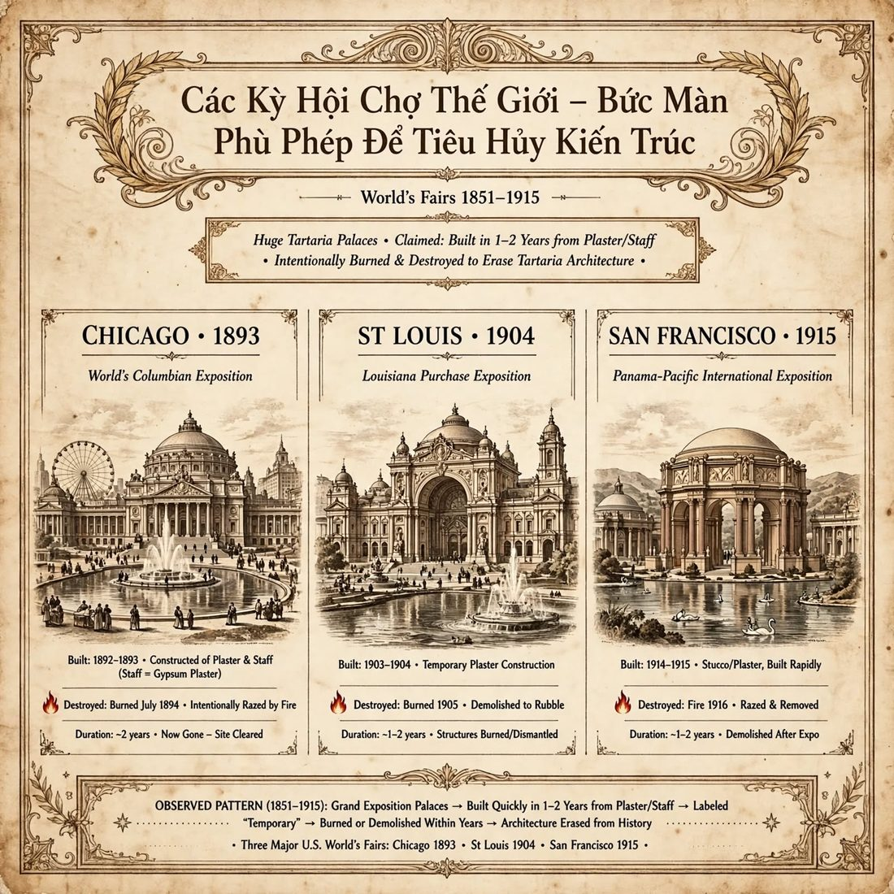
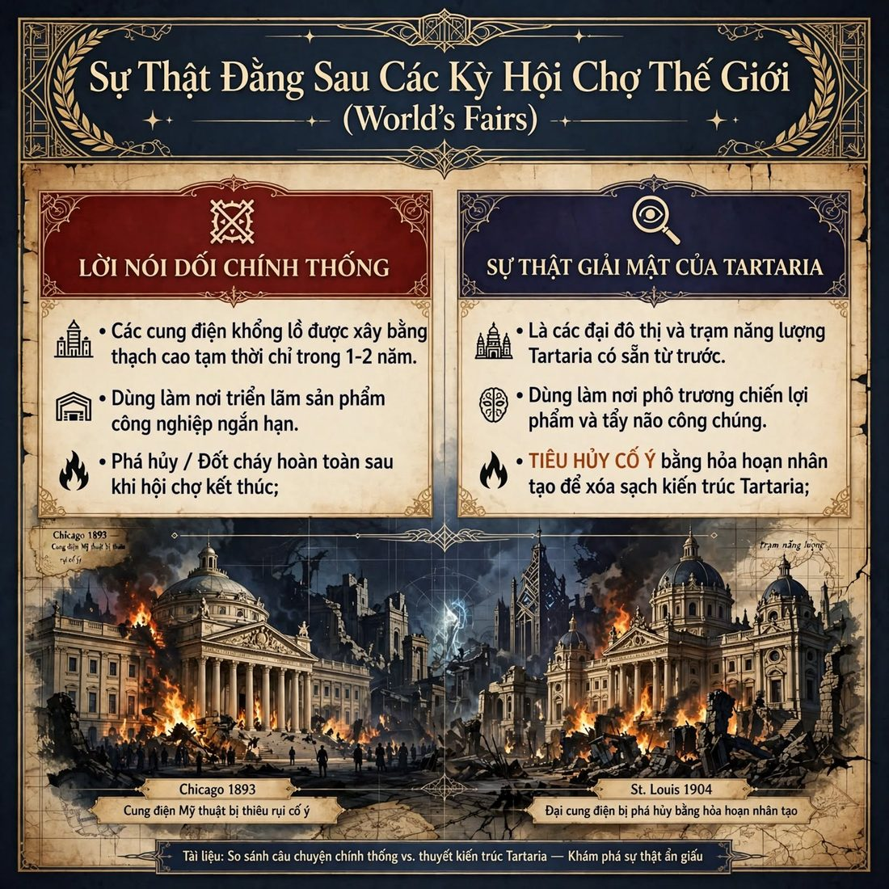
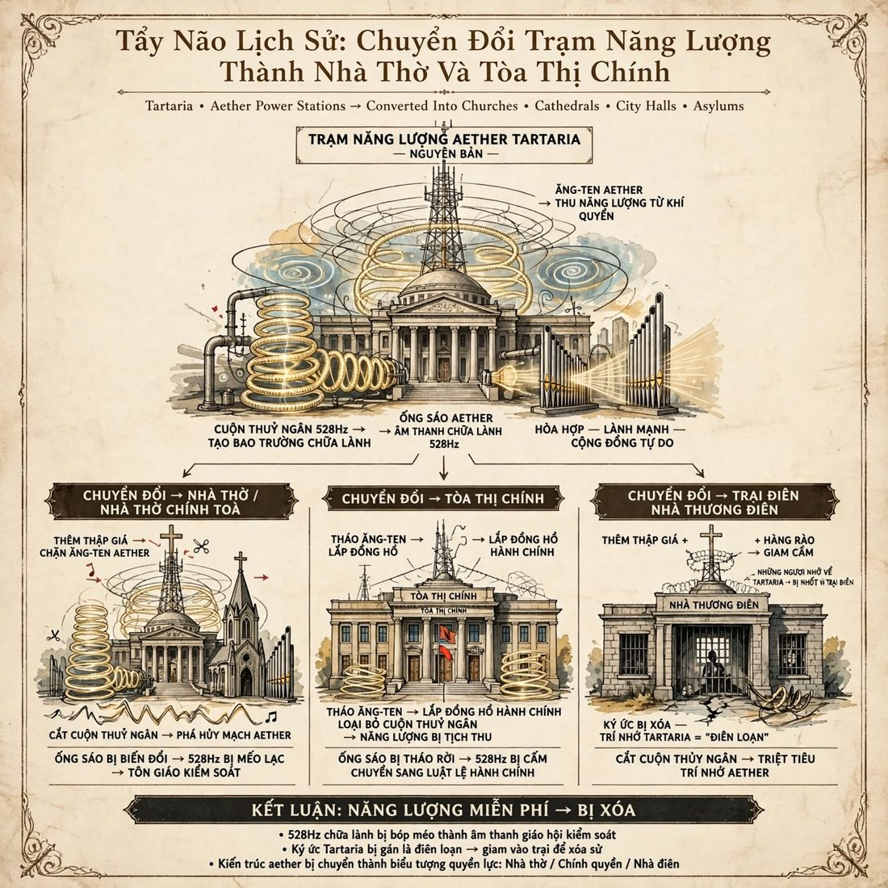
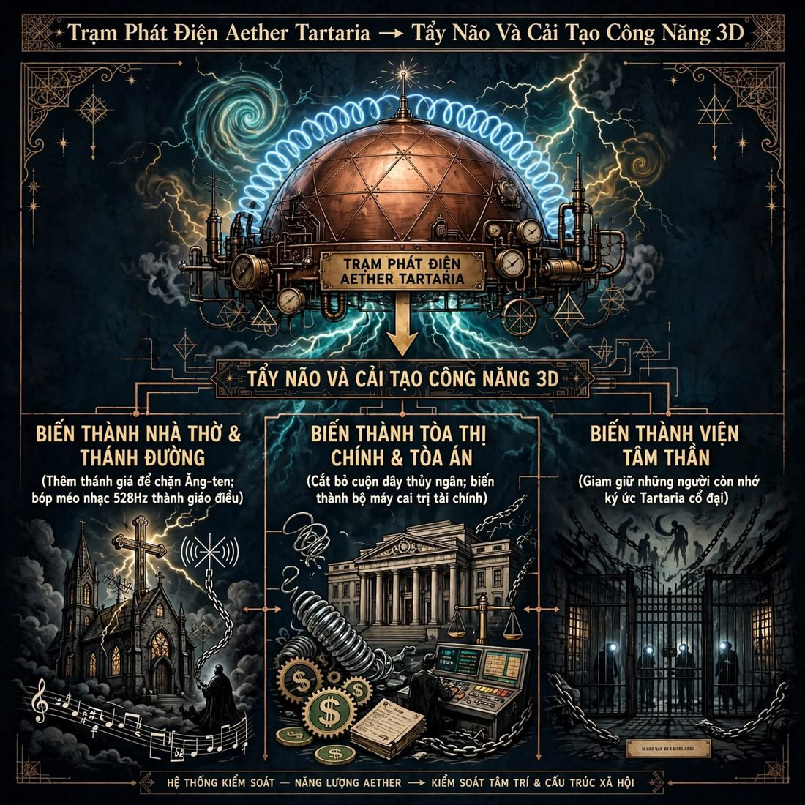
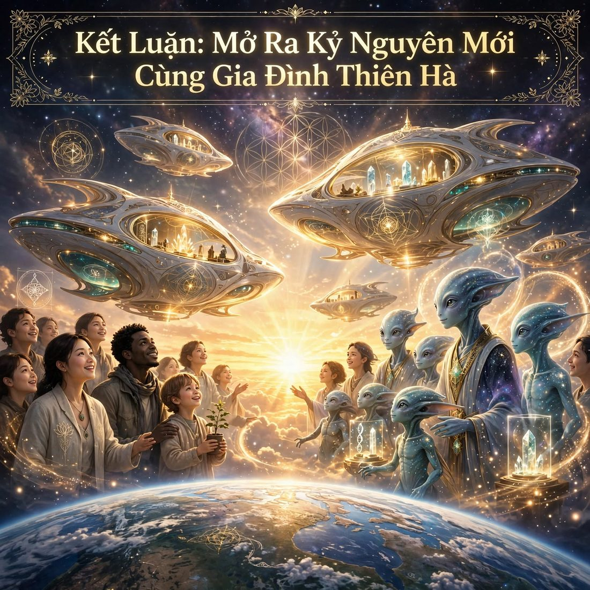

Trang chủ / Chuyên đề 10: Lịch Sử Bị Che Giấu & Nền Văn Minh Cổ Đại / Kỳ 97
Chuyên đề 10 · Kỳ 97 / 100
TRẬN LỤT BÙN (MUD FLOOD) & CÁC CHIẾN DỊCH "GREAT RESET" XÓA SỔ LỊCH SỬ

1. Giải Mã Thảm Họa Lụt Bùn (Mud Flood) Giữa Thế Kỷ 19
Nếu đế chế Great Tartaria từng là một siêu nền văn minh toàn cầu sở hữu công nghệ năng lượng miễn phí rực rỡ, thì điều gì đã khiến nền văn minh này biến mất hoàn toàn khỏi Trái Đất chỉ trong vòng chưa đầy hai thế kỷ qua? Câu trả lời nằm ở một sự kiện thảm họa địa chất bị che đậy cẩn thận: Trận Lụt Bùn Toàn Cầu (The Great Mud Flood) diễn ra trong khoảng thời gian từ giữa đến cuối thế kỷ 19 (khoảng những năm 1840 đến 1890).
- Các cửa sổ bị chôn sâu dưới lòng đất: Tại tất cả các thành phố lớn trên thế giới (từ Châu Âu, Châu Mỹ đến Châu Á), vô số tòa nhà cổ đại mang phong cách kiến trúc Tartaria sở hữu các tầng trệt và cửa sổ vòm nửa chừng nằm sâu dưới mặt đường hiện tại từ 2 đến 4 mét. Giới sử học 3D vội vã giải thích đây là "lối kiến trúc xây tầng hầm" hoặc "do rác thải tích tụ". Tuy nhiên, không một kiến trúc sư nào lại thiết kế cửa chính sang trọng và cửa sổ lấy sáng đâm thẳng vào lòng đất đá thối rữa.
- Nguồn gốc của lớp bùn khổng lồ: Trận Lụt Bùn không phải là nước lụt thông thường. Đó là sự hóa lỏng địa chất quy mô lớn (Liquefaction) kết hợp với các đợt tấn công bằng Vũ Khí Định Hướng Năng Lượng (Directed Energy Weapons - DEW) từ không gian, làm nung chảy các công trình đá và phủ lên bề mặt Trái Đất một lớp đất bùn sét dày hàng mét, vùi lấp hàng triệu đại đô thị Tartaria.
- Bản chất bùn đa chất (Geopolymer): Bùn hóa lỏng từ năng lượng sóng vô hướng nung chảy kiến trúc, đông cứng lại thành lớp geopolymer đá nhân tạo phủ kín toàn bộ tầng trệt của các đô thị.

2. Cuộc Thâu Tóm Của Băng Nhóm Ký Sinh & Chiến Dịch "Great Reset"


Sau khi trận Lụt Bùn và cuộc tấn công năng lượng làm sụp đổ cơ sở hạ tầng Tartaria, một lực lượng thao túng bóng tối — được gọi là Băng Nhóm Ký Sinh (Parasite Elite / New World Order) — đã bước lên nắm quyền và thực hiện các chiến dịch "Great Reset" toàn diện gồm ba bước: diệt chủng và làm trống dân số (hàng tỷ người Tartaria biến mất, Trái Đất rơi vào trạng thái "hoang vắng" tạm thời những năm 1850); chương trình tàu trẻ em mồ côi (Orphan Trains Agenda); và xóa bỏ bản sắc, viết lại sử.
Chương trình Tàu Trẻ Em Mồ Côi là một trong những bằng chứng gây chấn động nhất của cuộc "Reset Lịch Sử" giai đoạn 1850-1920. Băng nhóm cầm quyền đã gom nhặt trẻ em không có cha mẹ (những người sống sót sau thảm họa Mud Flood), đưa vào các "trại nuôi dưỡng" để tẩy não hoàn toàn ký ức về nền văn minh Tartaria cũ. Sau đó, số trẻ em này được phân phát cho các gia đình định cư mới để biến họ thành lực lượng lao động 3D không còn chút khái niệm nào về công nghệ năng lượng miễn phí hay lịch sử khởi nguyên.
3. Các Kỳ Hội Chợ Thế Giới – Bức Màn Phù Phép Tiêu Hủy Kiến Trúc


Để giải thích cho sự xuất hiện của hàng ngàn tòa nhà cung điện cự thạch, mái vòm đồng tráng lệ tại các thành phố mới thành lập ở Mỹ và Châu Âu, phe thâu tóm đã dàn dựng nên các Kỳ Hội Chợ Thế Giới (World's Fairs / Expositions) trong giai đoạn 1851 - 1915 (như Hội chợ Chicago 1893, St. Louis 1904, San Francisco 1915).
Giới cầm quyền tuyên bố các cung điện cự thạch nguy nga (như Tháp Trang Sức - Tower of Jewels, Cung Điện Nghệ Thuật - Palace of Fine Arts) chỉ được "dựng tạm bằng chất liệu thạch cao" để phục vụ hội chợ trong vài tháng. Tuy nhiên, các bức ảnh chụp cho thấy các công trình này sở hữu cột đá geopolymer vĩnh cửu, mái vòm đồng thu năng lượng và hệ thống kênh đào mài dũa vi mô. Ngay sau khi hội chợ kết thúc, họ châm ngòi cho các trận hỏa hoạn nhân tạo hoặc dùng thuốc nổ đánh sập toàn bộ các kỳ quan này để xóa sạch dấu vết kiến trúc Tartaria.
4. Tẩy Não Lịch Sử: Chuyển Đổi Trạm Năng Lượng Thành Nhà Thờ Và Tòa Thị Chính


Sau khi phá hủy các trung tâm năng lượng chính, các trạm phát điện khí quyển Tartaria còn lại đã bị phe cầm quyền cải tạo và gán cho những công năng hoàn toàn mới:
- Gắn thánh giá để triệt tiêu ăng-ten: Các kim tiêm thu năng lượng trên mái vòm đồng bị cắt bỏ hoặc gắn thêm biểu tượng thánh giá tôn giáo để làm chập mạch khả năng thu sóng Aether, biến nơi phát năng lượng miễn phí thành nhà thờ truyền bá tư tưởng phục tùng.
- Đàn đại phong cầm bị bóp méo: Âm nhạc tần số Cymatics 528 Hz chữa lành bị thay thế bằng các bản nhạc tần số can thiệp, biến sự cộng hưởng tâm thức thành nơi ru ngủ nhận thức.
- Biến đổi thành viện tâm thần (Asylums): Hàng ngàn tòa nhà vòm Tartaria nguy nga trên khắp nước Mỹ và Châu Âu bị biến thành các "Viện tâm thần" (Lunatic Asylums) để giam giữ và thủ tiêu những người dân sống sót còn nhớ rõ về lịch sử Great Tartaria.
5. Kết Luận: Xóa Bỏ Bức Màn Sương Lừa Mị

Trận Lụt Bùn Mud Flood và cuộc "Great Reset" thế kỷ 19 là bài học nhức nhối về cách thức ma trận 3D bóp méo thực tại, biến một nhân loại tự do, sở hữu năng lượng miễn phí thành những nô lệ tài chính phụ thuộc vào hóa đơn điện lực và nhiên liệu hóa thạch.
Khi chúng ta nhận diện được sự thật đằng sau các vết bùn lấp tầng trệt hay các trận hỏa hoạn bí ẩn thế kỷ 19, chúng ta tự tay đập tan bức màng sương dối trá của nền sử học giả lập; kết nối lại với sức mạnh sáng tạo và trí tuệ đỉnh cao của tiền nhân; và tự tin đòi lại quyền làm chủ đối với tri thức, lịch sử và nguồn năng lượng vô tận của Quê hương Gaia.